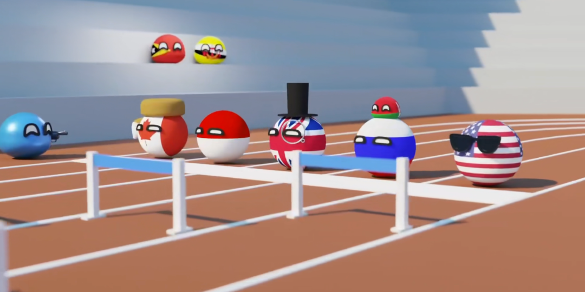

收录于合集

奥运会在体育政治中发挥何种作用
作者： Jonathan Grix，曼彻斯特城市大学体育政策教授。
编译： 穆若彤（国政学人编译员，中国人民大学PPE）
来源： Grix, Jonathan (2013). Sport Politics and the Olympics. Political Studies Review , 11(1), 15–25. doi:10.1111/1478-9302.12001

导读
本文从各国利用奥运会寻求国际地位与形象提高和奥运会所带来的“遗产”两个方面展开，梳理了学术界对奥运会等大型赛事在体育政治中所扮演的角色与产生的影响，在此基础上，作者也提出了两个方面的联系：“遗产”常常被作为申办和主办奥运会的关键理由提出，同时指出上述两个领域，即“奥运会是国家软实力战略的一部分”，以及了解如何最好地“利用”奥运会遗产的必要性将是政治科学和国际关系的研究者可以做出重大贡献的领域。
本文作为一篇综述性质较强的文章，有条理地梳理了学术界在奥运会等大型体育赛事领域中的研究重心，并在前人研究的基础上推进了发展方向。但也受制于文章的这一特性，本文在问题的深入探讨上是较为缺乏的。
本文发表于2013年，但其中所提到的问题仍然值得开展更进一步的研究。在全球面临新冠肺炎疫情考验的背景下，原定2020年举办的东京奥运会成为历史上首次延期举行的奥运会，疫情防控、科技辅助和奥运改革也由此成为东京奥运的关键词。主办国日本受疫情影响，并未享受到奥运红利，也未收到预期的政治、经济和社会效果[1]，这不仅在国际社会上引发了巨大的争论，也让有关奥林匹克遗产、奥运会商业化与体育发展等诸多议题重新成为学界热点。随着2022年冬奥会的举办，作为“双奥之城”的北京也将发挥着更加重要的形象宣传作用，而如何让奥运更好地助力国家发展，这一议题在未来仍将享有极大的价值。
摘要
体育和政治长期以来都是联系在一起的，而奥运会在所有体育赛事中最具政治性。本文重点介绍了奥运会（以及体育“大型赛事”）的两个最重要方面：各国利用奥运会展示其作为主办国的能力，以及由此产生的人们所希望的“遗产”（legacies。这两个方面也是相互关联的：“遗产”常常被作为申办和主办奥运会的关键理由提出。
编译
一
举办奥运会：寻找“名利双收”的机遇
各国申办和主办奥运会的理由与主办国际足联世界杯（FIFA World Cup，全球最受关注的体育盛事）以及英联邦运动会（Commonwealth Games）等所谓的 “二等赛事”非常相似，后者通常是申办奥运会的前兆。
一种观察结果认为，奥运会等赛事正越来越多地走向“新大陆”，从所谓的发达民主国家到“新兴”民主和非民主国家，似乎出现了明显的转变。 在北京夏季奥运会（2008年）和卡塔尔世界杯（2022年）之间，大约有八项重大体育赛事将在“新兴”国家举行，包括但不限于索契冬季奥运会（2014年，俄罗斯）、巴西夏季奥运会（2016年）和平昌冬奥会（2018年，韩国）。容易理解的是，除了建立这样一种潮流，国际管理组织（即国际足联、国际奥委会等）的动机是希望扩大自己的市场，并将他们的品牌传播到更远的地方。但是，这些申奥国家的动机是怎样的，与发达的民主国家又有什么不同呢？尽管一个国家想要申办、举办或在奥运会上脱颖而出可能有无数的背景原因，但有几个一般原因似乎经受住了时间和政权类型差异的考验。在不低估面向奥运会的国家战略的复杂性和多样性的情况下，“软实力”的概念可以解释许多原因。
“软实力”与国家的公共外交和形象管理战略紧密相关联，其提供了一个总括性的术语来描述一个国家的战略，尤其是提高其国际地位的战略——不是通过影响“他人的行为以获得自己想要的结果”（强制力），而是通过吸引他们并选择“你想要他们想要的”。 体育显然是“软实力”战略的一部分，举办大型体育赛事，特别是奥运会，被各国视为在改善自身形象、在全球塑造和展示自己以及通过入境旅游“吸引”他人的过程中做出重大贡献的手段，增强了贸易往来和民族自豪感。越来越明显的围绕申办过程的竞争证明了各国希望利用大型体育赛事的文化资源。如果文化资源是新的“吸引力政治”或“新外交”的一部分，那么奥运会就可以被理解为软实力战略的一部分。伴随着东道主的语言、文化遗产和更广泛文化的传播，这将帮助国家在国际舞台上更好地展示自己。
在以政治手段操纵体育运动的历史中，德国所发挥的核心作用是值得关注的。 在一部分人看来，柏林奥运会是现代体育大型赛事的先驱或“奥林匹克奇观的巅峰”，可与洛杉矶奥运会的“好莱坞秀”和北京奥运会相媲美。尽管动用了大批的表演人员并且伴随着激烈的宣传，柏林奥运会似乎在增加德国的软实力以及改变其他国家对德国的看法上缺乏显著作用。德国在2006年世界杯期间的软实力战略包括一系列长期、精心规划和重点突出的用以提高国际地位和形象的活动，随之展现的球迷主导的比赛方式向世界描绘了一个热爱派对、无忧无虑、充满乐趣的德国，同时也展现了德国极其高效、顺利地活动举办能力。德国的杠杆战略——特定的媒体宣传活动，为多达2000万人引入特定的“粉丝区”（Fan Zones）——引发了一场广受欢迎的赛事，这让人们对德国和德国人的看法产生了积极的变化。
德国的案例表明，要借助策略在最大限度上利用大型体育赛事。 举办奥运会显然就是这样一种策略；然而，大型活动应如何进行管理，如何向国际舞台发出“信号”，以及全球曝光率的增加如何在国际关系中发挥实际作用都需要进一步研究。
二
奥林匹克遗产和奥运会的商业化
“遗产”是一个具有多种含义的概念，而与“体育盛会”或“奥运会”结合起来并没有使其变得更加清晰。人们希望奥运会留下的遗产包括：参加体育运动或体育活动的人数增加（即“参与性遗产”，the participatory legacy）、城市更新、经济增长、旅游业的增加、使公民感觉良好（a ‘feel-good’ factor among citizens）以及国家形象的提升。在2012年之前，人们对奥运遗产的担忧越来越明显。原因很简单：“遗产”是从投资中获得的回报，而人们希望的遗产通常会作为举办活动的首要理由。随着大型体育赛事变得越来越夸大其词，人们对“遗产”的期望相应提高，国际奥委会也坚持将“遗产战略”列入招标文件（bidding document）。
“遗产”也可以被理解为一场比赛被记住的方式。柏林奥运会（1936年）和慕尼黑奥运会（1972年）——其中11名以色列奥运代表团成员和1名西德警察被巴勒斯坦团体“黑色九月”杀害——都有自己的“遗产”。洛杉矶奥运会（1984年）在体育史上被誉为“迄今为止最商业化的奥运会”，尽管伦敦奥运会（2012年）似乎将取代洛杉矶获得这一称号。除“遗产”的定义问题外，这一概念在各种各样的语境（包括环境、社会、文化、教育、卫生、经济和城市遗产以及公民的心理健康等）中的应用使其含义难以确定。一些学者指出，学术界对遗产领域的兴趣过多，并试图在事后的“影响研究”中对其进行衡量，但在研究“杠杆”战略方面投入的精力太少，即各国寻求并成功地利用大型体育赛事实现社会、经济、环境和声誉或“形象”效益的机制。实际上，“杠杆”指的是“那些寻求从赛事中获得最大长期利益的活动”，即从赛事中获得“遗产”的方式。这些活动包括宣传活动和主办地点，通常目的是刺激入境游客和对主办国的直接投资增长，以及加强诸如国际奥委会、主办国政府、活动赞助商等利益相关者之间的商业关系。
在2012年伦敦奥运会承诺的所有“遗产”中，参与性遗产是英国联合政府确信将实现的遗产。问题在于，并没有证据证明精英体育赛事可以激励不参与运动的人们开始进行运动。在此之前，没有哪届奥运会像伦敦奥运会那样“激励一代人”参加体育活动；然而一些证据表明，尽管运动健将或那些已经参与体育运动的人可以得到进一步的启发，但对于这一群体来说，这种激励并不是难以获得的。
伦敦奥运会留下的遗产是一场“安全”奥运会。9·11事件以来，奥运会安保的规模和复杂性都在增加。2005年7月的伦敦爆炸案加剧了这一过程，爆炸发生在伦敦宣布将于2012年举办奥运会的第二天。恐怖组织袭击奥运会的原因是相对清晰的：奥运会是世界上最大的体育赛事，吸引的全球观众累计超过40亿，有200多个国家出席，这意味着对于许多国家而言，在奥运会中赢得奖牌并提高奖牌榜排名，是提高国家声望的最有力和最具象征意义的舞台。伦敦由此被认为应该采取更严格的安保措施，举办迄今为止最“安全的”奥运会，一些评论员将该赛事称为“封锁伦敦”（lockdown London）。除此之外，负责确保赛事安全的私人安保公司G4S的丑闻提出了一个核心的问题：当前公共服务部门正在大幅削减预算，以减少公共开支，从而允许雇佣更“高效”的私营部门供应商，但将安保外包给私人公司的战略必须回归到由公共服务部门（警察和军队）负责安保工作的正轨上。
三
奥运会的新自由化(Neo-liberalisation)？
奥运会是一项大生意。海伦·伦斯基（Helen Lenskyj）选择了“奥林匹克产业”一词，而拒绝了国际奥委会所使用的诸如“奥林匹克大家庭”或“奥林匹克主义”等“松散”的术语来形容这一大型赛事。“奥林匹克产业”在奥运会的“新自由化”中表现得尤为明显。约翰·萨格登（John Sugden）和艾伦·汤姆林森（Alan Tomlinson）甚至表示，“最引人注目、最根本的变化是，奥运会已经稳步、无情地从一个业余的、民众参与的体育盛会转变为一个由国家精心策划、商业驱动、国际控制的媒体大事件”。
虽然“遗产”承诺是建立在希望（hope）之上的，而不是任何有形的证据或明确阐述的杠杆战略，但奥运会“企业的”（corporate）一面是现实（reality）。 大多数支持奥运会商业化的观点也援引了举办奥运会将产生的“遗产”。然而，为奥运会提供资金的可口可乐、麦当劳等跨国公司同时与多数国家的肥胖危机紧密相关，因此，如何协调 “激励一代人”参加体育活动的呼吁与降低日益增长的肥胖率之间的关系，成为了必须面对的问题。除此之外，作为国际奥委会规定的一部分，奥林匹克公园成为了“核心赞助商”销售其商品的准避税天堂，奥林匹克公园内的交易不需纳税，也不会有资金流入支付交易的公共钱包。霍恩（Horne）认为，东道主遵守国际奥委会越来越长的要求，导致奥运会成为赞助商项目（“fat cat” projects）和媒体奇观（media spectacles），而这使得赞助奥运会的公司、获得公共补贴的房地产开发商，以及从电视公司和全球赞助商那里获得数百万美元的国际奥委会成为了最主要的受益者。
四
结论
随着奥运会的成本越来越高、规模越来越大，体育现实似乎越来越落后于政治和跨国公司的愿望以及国际奥委会设定的条款和规定。虽然从学科意义上来说体育政治的研究方法多样性是受到欢迎的，但现在是时候让政治学家跟随国际关系学者群体，将注意力转向一个日益复杂的新兴研究领域：体育政治和奥运会。奥运会为检验一国政府的公共行政与立法能力提供了理想的案例——简言之，奥运会涉及的领域远不止体育研究。本文关注的两个领域——作为国家软实力战略一环的奥运会，以及了解如何最好地“利用”奥运会遗产的必要性——是政治科学和国际关系学可以做出重大贡献的领域。
参考文献
[1] 颜泽洋：《东京奥运会的影响及启示》，载《现代国际关系》，2021年第9期。
词汇整理
英联邦运动会 **Commonwealth Games
**
招标文件 bidding document
参与性遗产 the participatory legacy
赞助商项目 “fat cat” projects
审校 | 常佳艺 王图梓
排版 | 陆霜滢
文章观点不代表本平台观点，本平台评译分享的文章均出于专业学习之用, 不以任何盈利为目的，内容主要呈现对原文的介绍，原文内容请通过各高校购买的数据库自行下载。

国政学人
支持学术公益与知识传播
微信扫一扫赞赏作者 __赞赏
已喜欢，对作者说句悄悄话
取消 __
发送给作者
发送
最多40字，当前共字
上一页 1/3 下一页
长按二维码向我转账
支持学术公益与知识传播
受苹果公司新规定影响，微信 iOS 版的赞赏功能被关闭，可通过二维码转账支持公众号。